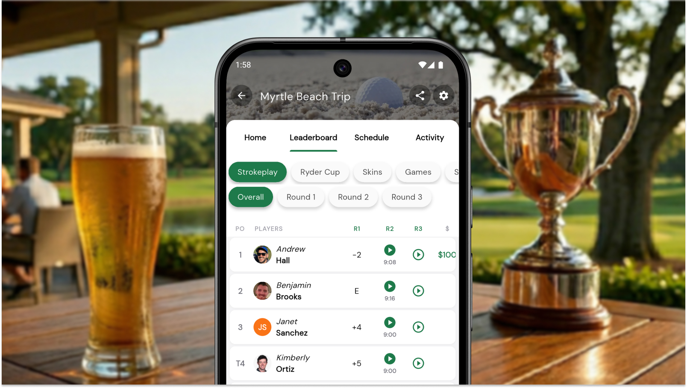
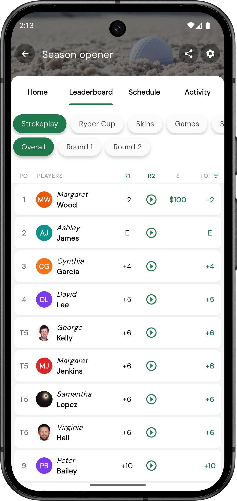
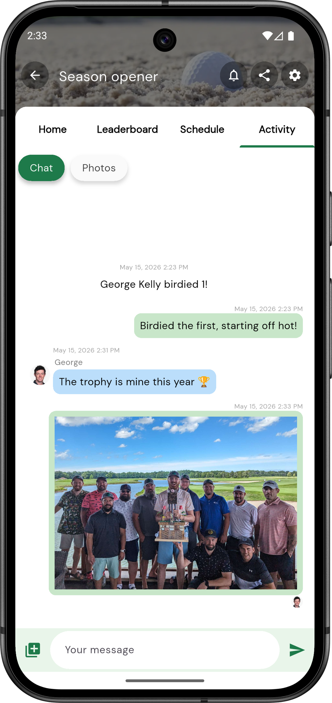

The Free App That's Quietly Become Every Golf Trip's Scorekeeper

Every group has the guy. The one who appoints himself the trip's unofficial commissioner and ends up at the bar working through everyone's scorecards while the rest of the group is already on their second pint. By the end of day two, somebody at the table is arguing about an adjusted handicap, yesterday's skins game has yet to be settled, and nobody is entirely sure who is leading the overall. The better the golf, the worse the scoring tends to get, and on most buddies trips the bookkeeping ends up living in a chaotic mix of scorecards and Google Sheets.
Squabbit was built to fix that. It is a free golf tournament and league app that, over the last few years, has quietly become the default scorekeeper for buddies trips, club outings, and society tours around the world. More than 200,000 events have been run on it, and it carries a 4.9-star rating on both the App Store and Google Play. For groups booking a trip to anywhere from Pinehurst to Portrush, it is worth knowing about before you go.
The leaderboard is the trip
What most groups do not expect from a scoring app is how much excitement a live leaderboard adds to a round. As scores are tapped in on phones or watches, every player in the group sees the board update in real time, so a birdie on 14 lands as a push notification with the group two holes ahead before the ball is even out of the cup. By the time the leaders are walking up 18, every player knows exactly how far off the lead they are. Half the trip is watching the board from the cart, the next tee, or the clubhouse, the way fans follow a Sunday leaderboard at a televised event. The needling that usually waits until the bar starts somewhere around the turn, and the player who has been quietly sandbagging all morning has nowhere to hide. That side of a trip is where most of the fun lives, and Squabbit gives it the kind of structure that usually only exists in real tournaments.

Built for the way real trips work
Most golf scoring apps are built around a single round, and trips never work like that. A real buddies trip might open with a stroke play round on day one, run a Ryder Cup style team match from day three through day five, and have a separate skins game going each day on top. Squabbit fits all of that inside a single tournament, with each competition tracked on its own leaderboard alongside the others. There is no cap on the number of rounds, so longer trips with extra days, alternate courses, or a back-to-back morning and afternoon round just plug in. Side games like closest-to-pin and longest drive live in the same event too, so when the group sits down at the bar at the end of the trip, every competition that has been running has a clear winner.
The group chat lives with the scores
Every trip already has a group chat in some form, usually a WhatsApp thread or an iMessage group, and most of the action ends up scattered across it. Photos from the course in one place, score arguments in another, leaderboard guesswork in a third. Squabbit pulls all of that into the event itself with a built-in chat that sits alongside the leaderboard. Birdies and other scoring moments post automatically as the round plays out, so the back and forth starts itself, and players can drop their own messages and photos in from the course. By the end of the trip there is one continuous thread that captures the whole thing, scoring milestones, trophy photos and all, instead of a chat history fragmented across half a dozen apps.

Works when the signal doesn't
Anyone who has played Bandon Dunes, the west of Ireland, or much of Scotland knows that the "live updates" part of any scoring app's promise tends to fall apart somewhere around the third tee. Squabbit was built with that in mind. Scores save locally on the device and sync automatically once a player comes back into signal, so a full round can be played in a dead zone and the leaderboard catches up the moment someone walks back into the clubhouse. For an international trip, where roaming data is often patchy and expensive, the difference is significant.
Everyone is in with one tap
Getting players into the event is the part that usually kills these things, and Squabbit gets around it with a single shared link or QR code. The trip organizer sets the event up once, drops the link in the existing group chat, and players are in within seconds. Only one person per group actually has to enter scores on the day; everyone else can simply follow along on the leaderboard. There is also a browser version of the app, so anyone who would rather not install something new can still take part from their phone's browser without missing a thing.
Free to use for the trip
Most apps in this space charge, by player or by event or by both, and a 16-person trip with multiple rounds can run a few hundred dollars on competing platforms before anyone has hit a ball. Squabbit is free to download and free to use, with no per-player fees and no per-event fees, whether a group is running a casual weekend round or a multi-day trip-long competition. For a group that has already spent real money on flights, hotels, and tee times, taking the scoring software off the list is a small thing that adds up.
It is also worth trying before the trip. By the time the group lands at the destination, everyone already has the app, the leaderboard is already configured, and there is nothing new to learn in the airport bar.
The point of the trip
A good golf trip is mostly about the people. The courses are the excuse, but the scoring is what holds the days together and gives everyone something to argue about in the bar, on the bus, and in the group chat afterwards. The less time spent untangling that side of the trip, the more there is for the rest of it. If your next trip is the kind where the scoring matters, and on a proper buddies trip the scoring always matters, Squabbit is worth a look before you go.
Try Squabbit on your next trip
Free on iOS, Android, and the web.